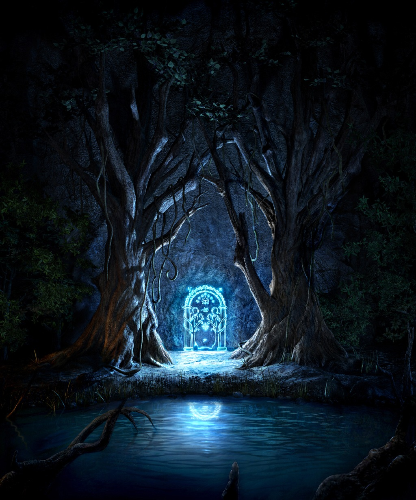
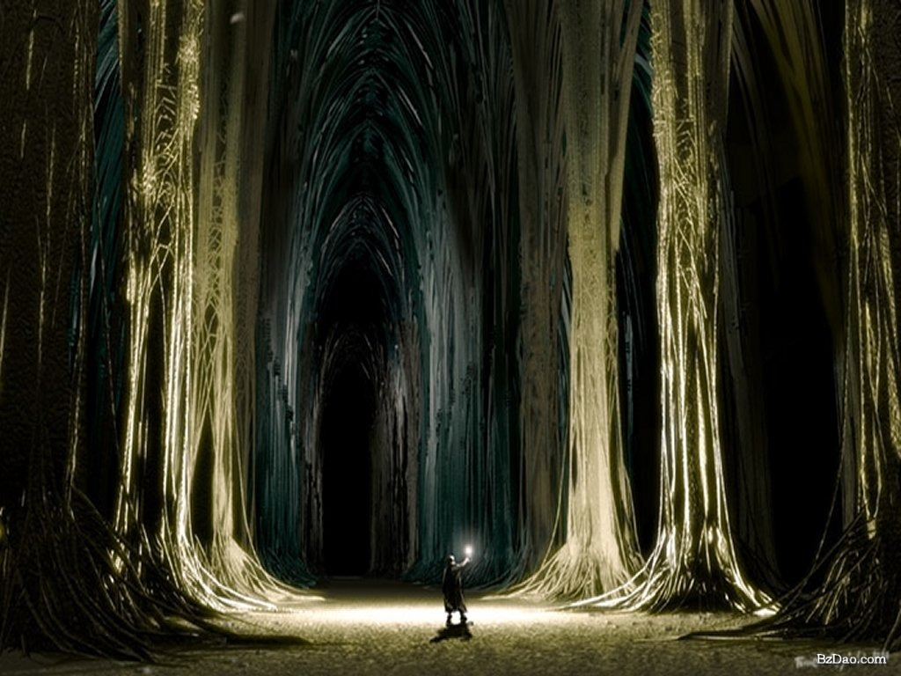

Карта средиземья

К карте
Все элементы
Млория
Мория (синд. Moria, «чёрная бездна»; также Кхазад-Дум, Хадходронд и Фурунаргиан) — в легендариуме Дж. Р. Р. Толкина огромный подземный город в Мглистых горах Средиземья. Её обширная сеть туннелей включала глубокие шахты и огромные залы, соединённые переходами. В течение многих тысяч лет обитателями Мории являлись гномы-наугрим из династии Дурина (англ. Durin).

Наибольшая часть залов, переходов и шахт Мории географически располагалась примерно в центре Мглистых Гор, под системой из трёх горных вершин — Баразинбара (синд. Карадрас), Зирак-зигиля (синд. Келебдил) и Бундушатхура (синд. Фануидол), через которые пролегал перевал, известный как Багровые Ворота.
У подножия Карадраса находились Западные Врата Кхазад-Дума, выполненные гномами и зачарованные мастерами из эльфов-нолдор Гвайт-и-Мирдайн, которые во Вторую Эпоху основали своё королевство в Эрегионе. С другой стороны горного хребта открывались Восточные Врата, выходившие в долину Нандухирион (или Азанулбизар на языке гномов).
Этот город-государство был основан Дурином Первым Бессмертным ещё в бессолнечную Эпоху Деревьев, за несколько тысяч лет до Пробуждения Людей. Изначально Дурин Первый жил под горой Гундабад на севере Мглистых гор. Путешествуя на юг, он достиг высокогорного озера, где увидел отражение звёзд в воде в виде короны, сверкающей над его головой. Приняв это как благоприятное знамение, Дурин впоследствии сделал это место своим новым домом. Он назвал это озеро Зеркальным или Келед Зарам, и оно оставалось почитаемым местом среди гномов — обитателей города, который он назвал Кхазад-Дум, ставший известным позже как Мория.
В Мории Дурин основал клан Длиннобородых — самый древний из семи кланов гномов, став королём Кхазад-Дума. Впоследствии шестерым из его потомков и наследников давали его имя, поскольку они были очень похожи на своего праотца. Их считали перевоплощениями Дурина Бессмертного.
В начале Второй Эпохи в Морию переселилось множество гномов из разрушенных в ходе Войны Гнева западных гномьих городов Ногрода и Белегоста, располагавшихся в западной части горного хребта Эред Луин. Гномы Кхазад-Дума тогда торговали, чтобы поддерживать дружбу с царством эльфов-нолдор Эрегионом, но эта дружба прекратилась после создания Сауроном Кольца Всевластья и разрушения эльфийского царства. Врата Кхазад-Дума были надолго закрыты, и Саурон так и не смог войти в это место.
Главное богатство Мории состояло не в железе, серебре или золоте, а в драгоценном металле — мифриле, который был найден только здесь. В 1980 году Третьей Эпохи гномы, исчерпав более доступные мифриловые жилы, ушли на самые глубинные горизонты и невольно пробудили балрога, которого они назвали Погибелью Дурина, поскольку он убил короля Дурина VI в том же году и в следующем году — Наина Первого, его сына. Гномы оказались бессильными перед Погибелью Дурина и потому были вынуждены бежать из Кхазад-Дума. После этого Кхазад-Дум стал местом страха и зла, и именно тогда эльфы назвали его Мория (Чёрная Бездна).
Некоторое время спустя орки Мглистых Гор сделали Морию своим обиталищем, но в 2790 году Т. Э. бывший Король-Под-Горой Трор, потомок Дурина Бессмертного, опрометчиво попытался повторно занять свой наследственный дом. Он был убит предводителем местных гоблинов Азогом, и это убийство развязало войну гномов и орков, которая завершилась кровавым сражением в Азанулбизаре за восточными вратами Мории девять лет спустя. Гномы победили, но они понесли большие потери и не стали занимать Морию, не желая встречаться с Погибелью Дурина.
Несколько поколений позже Балин, который сопровождал хоббита Бильбо Бэггинса во время его знаменитого путешествия в Эребор, описанного в «Хоббите, или Туда и обратно», собрал новую группу гномов, чтобы снова попытаться восстановить древний город. Первоначально удача сопутствовала ему, но через несколько лет группа Балина была уничтожена орками и Погибелью Дурина; об их судьбе узнали лишь многие годы спустя.
После восшествия на престол Даина II в Эреборе, родился Дурин VII прямой наследник Торина III Камнешлема (как говорилось в пророчестве). Он был последним потомком Дурина и возглавлял Народ Дурина во время повторной попытки вернуть Кхазад-Дум, через некоторое (неуточнённое) время, после начала Четвёртой Эпохи, где они и остались «пока мир не состарился, и гномы не исчезли, и дни народа Дурина не окончились».
К концу Третьей Эпохи, во время событий, описываемых во «Властелине колец», Мория вновь стала местом страха и ужаса. Когда Фродо Бэггинс на пути из Ривенделла вместе с Братством Кольца были остановлены горным обвалом, они были вынуждены пройти через Морию. После многочисленных попыток подобрать пароль к Западным Вратам Мории двери удалось открыть словом «Друг», произнесённым на эльфийском.

В чертоге Мазарбул (Летописном) члены Братства обнаружили летопись Балина и узнали судьбу его неудачной экспедиции. В тот же день они были атакованы группой орков. Маг-Истари Гэндальф Серый встретил демона на узком Морийском мосту около развалин Восточных ворот Мории, где они сразились один на один и во время поединка вместе сорвались с моста в Морийский ров. Остальная часть Братства, повинуясь приказу Гэндальфа, отступила по мосту.
Хотя и Гэндальф, и балрог пережили падение, они продолжили свой легендарный поединок на дне рва, поднимаясь от исконных глубин ниже Мории к одной из вершин горы, в конечном счёте уничтожив вершину легендарной Бесконечной Лестницы Кхазад-Дума.
Со смертью балрога для Длиннобородых наконец открылась возможность восстановить свою древнюю родину, и говорят, что Дурин VII — потомок Дурина Бессмертного наконец привёл свой народ назад, в их долгожданную древнюю родину, спустя несколько столетий после её разрушения, восстанавливая то, что осталось от некогда могущественного Кхазад-Дума.